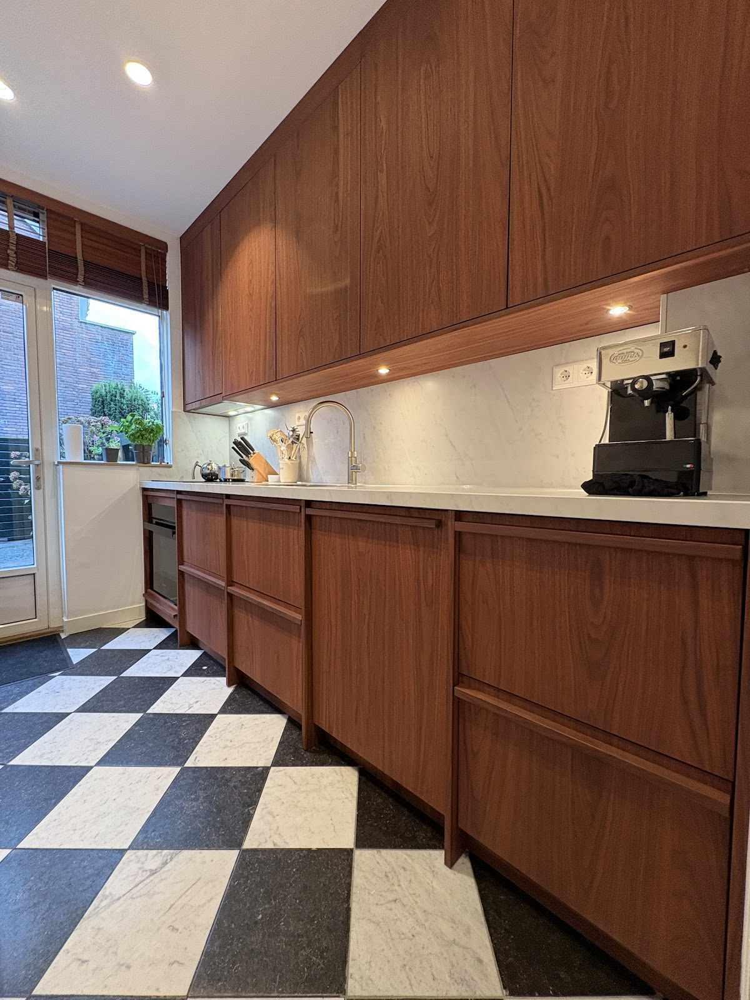
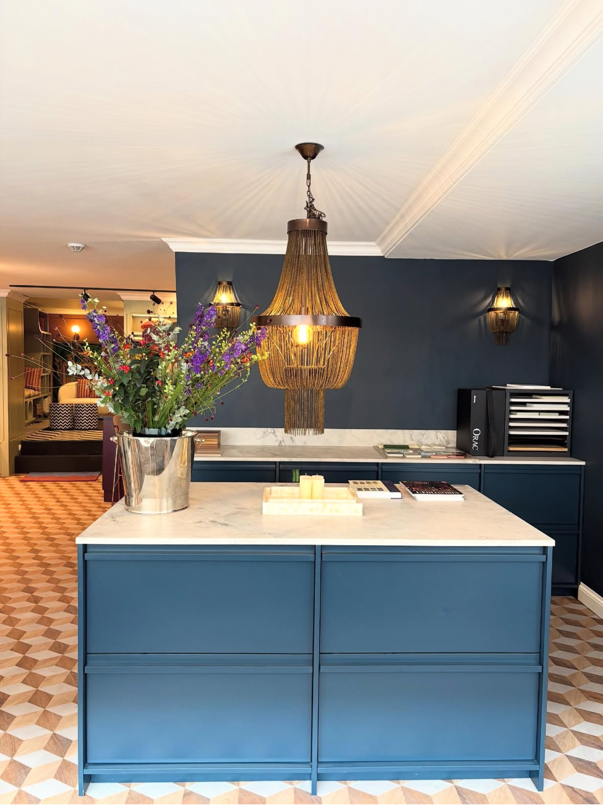
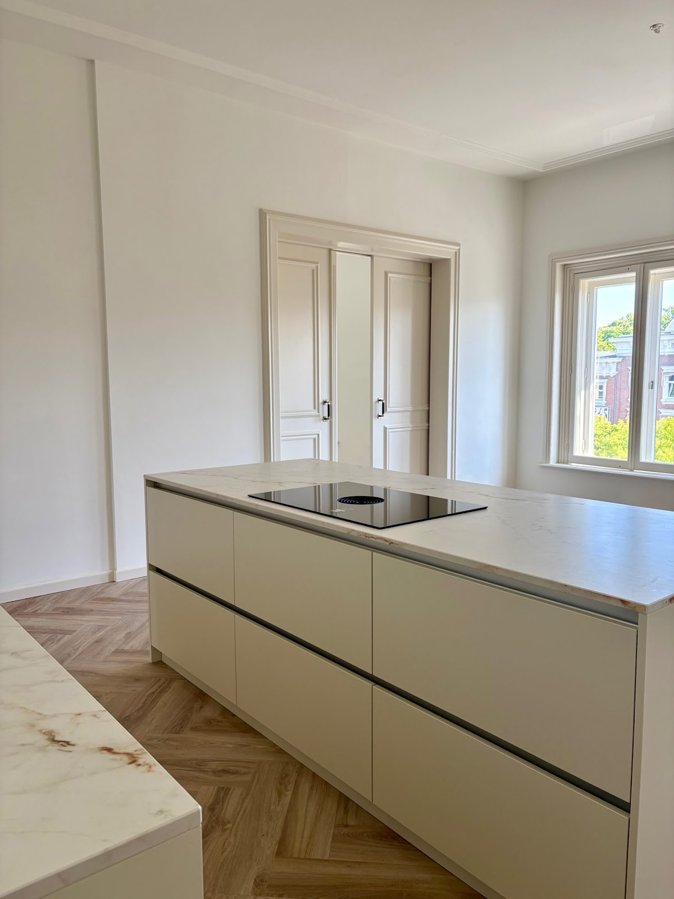
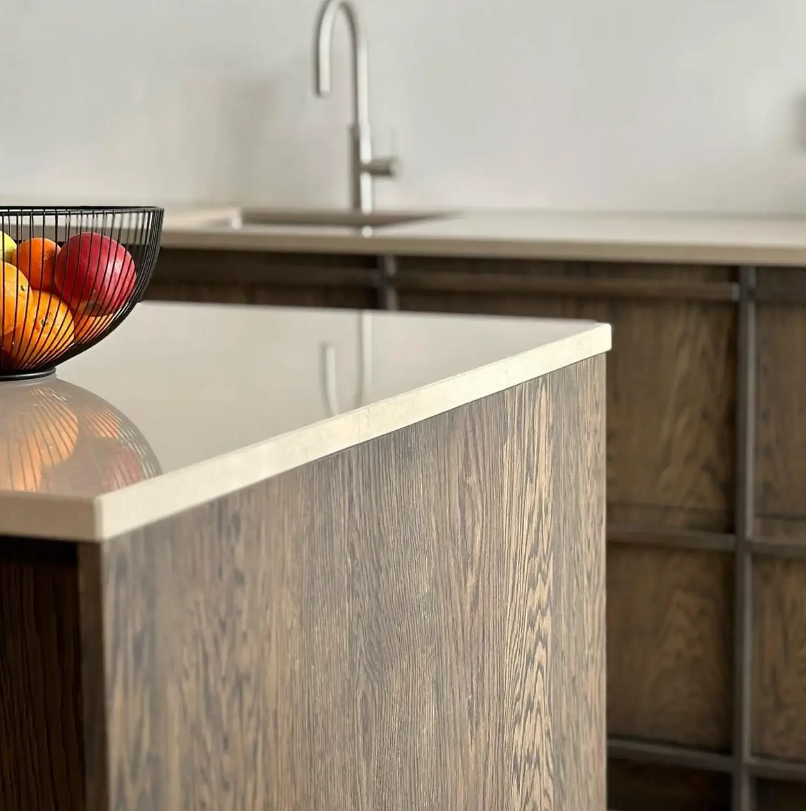
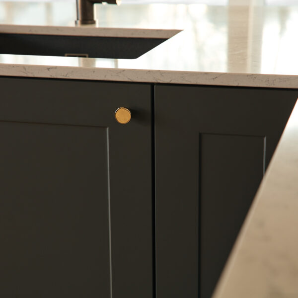
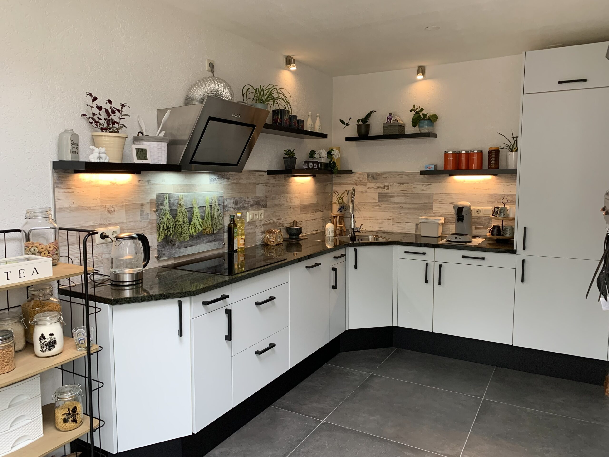
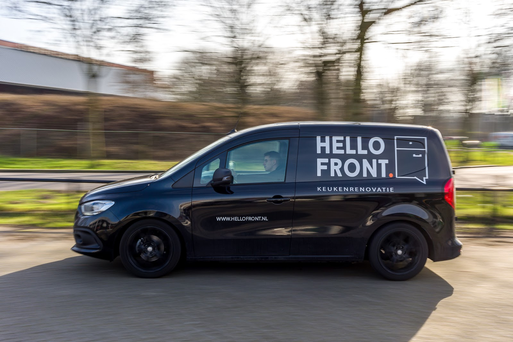

Nieuwe fronten
De kasten blijven staan, wij vervangen de deurtjes, laden en zijpanelen. Minder sloopwerk, minder rommel, en uw keuken ziet er gloednieuw uit.
Keukenrenovatie in Doetinchem
Staat uw keuken nog goed, maar oogt hij moe? Wij vervangen fronten en zijpanelen op maat, of plaatsen een complete nieuwe keuken.
4,5 op Google, uit 6 reviews

Uw keuken hoeft er niet altijd uit. Vaak zijn de kasten nog prima en is het alleen de buitenkant die gedateerd is. Dan is een nieuw front genoeg. Wilt u toch alles anders, dan plaatsen we een nieuwe keuken.

De kasten blijven staan, wij vervangen de deurtjes, laden en zijpanelen. Minder sloopwerk, minder rommel, en uw keuken ziet er gloednieuw uit.

Heeft u al een idee, of begint u blanco? We werken uw ontwerp samen uit en plaatsen de keuken met korte lijnen en duidelijke afspraken.
Een front bepaalt hoe uw hele keuken aanvoelt. Een paar voorbeelden van wat we gemaakt hebben.



4,5
van 5 op Google
uit 6 reviews
"Zo ontzettend blij met onze nieuwe keuken look! Alle fronten vervangen door Hello Front. Super snelle service, makkelijke communicatie en prachtig resultaat. Meer dan verwacht alles bij elkaar!"
"Begin dit jaar heeft Hello Front de frontjes en zijpanelen van onze keuken vervangen. We zijn ontzettend tevreden over het eindresultaat. De keuken lijkt hierdoor gloednieuw!"
"Keuken laten plaatsen, korte lijnen, duidelijke afspraken en een prima prijs. Zeker aan te bevelen. Danny, Bas en team hartelijk dank."
"Super fijne samenwerking en samen al heel veel tevreden klanten geholpen!"

Bel ons, stuur een mail of kom langs aan de Tramstraat. Een paar foto's van uw huidige keuken helpen ons al een eind op weg.
Bel 0314 724 884| Maandag t/m vrijdag | 09:00 tot 17:00 |
| Zaterdag en zondag | Gesloten |